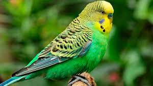

Разновидности попугаев
Есть огромное множество разновидностей попугаев: от маленьких волнистых попугайчиков и до огромных, ярких ара. На этом сайте я попробую рассказать о некоторых их видах. Для семейства попугаеобразных характерен сильный, загнутый клюв, яркое и разноцветное оперение, часто способность имитировать человеческую речь, четыре пальца на ногах (два направлены вперед и два назад). Рацион попугаеобразных в основном состоит из фруктов, овощей и зерна. Наиболее распространенные попугаи в Австралии - там проживает половина видов (какаду, кореллы, волнистые и др.). Живут попугаи также в Центральной и Южной Америке - около трети видов (ара, амазоны, клинохвостые и другие). Несколько меньше этих птиц есть в Африке и Южной Азии. В основном попугаи живут в лесах, но некоторые виды (австралийские) проживают на открытой территории. Существуют даже попугаи которые имеют дом в горах (новозеландский кеа и кольчатый попугай нестор).
Какаду
{kind=link}
Слово какаду пришло в европейские языки из малайского названия птицы kakatua (другой вариант — kakak-tuá). Французский орнитолог Луи Вьейо, описавший типовой род Cacatua, в «Новом словаре естественной истории» (1817) высказал мнение, что на своей родине оно имеет звукоподражательное происхождение. Современные авторы склоняются к версии, что малайское название всё же является видоизменённой формой слова kakatuwah, которым обозначали мощный клюв.
Макс Фасмер в своём этимологическом словаре со ссылкой на других авторов указал, что в русском языке слово какаду было скорее всего заимствовано от немецкого названия Kakadu, с меньшей вероятностью от голландского kаkаtое, португальского сасаtu, или испанского сасаtuа. Какаду - достаточно крупные и средних размеров попугаи длиной от 30 до 60 см, массой 300—1200 г. Клюв сильно загнутый, длинный и очень массивный. Внешнее строение клюва имеет характерные особенности, позволяющие отличить какаду от других попугаев: подклювье всегда шире надклювья в самой широкой его части; по этой причине края подклювья накладываются на более узкое надклювье как бы ковшом. Другим отличительным признаком птицы является наличие хохолка — удлинённых перьев на темени и затылке. Цвет хохолка отличается от общей окраски оперения, может состоять из белых, чёрных, розовых или жёлтых перьев. Полностью отсутствует зелёный цвет.
Амазоны
{kind=link}
Амазоны - довольно крупные попугаи плотного телосложения. Длина птиц от 25 см до 45 см. Окраска оперения в основном зелёная, у одних видов имеются красные пятна на голове и хвосте, у других есть красное «зеркальце» на крыле. Характерной особенностью этих попугаев является сильный клюв умеренной длины и округлой формы и надклювье, образующее к основанию острое ребро. Крылья средней длины, до конца хвоста не доходят. Они обетают в Центральной, Южной Америке и на Антильских островах.
Ара

Ара это крупные (длиной до 95 см) попугаи с очень яркой окраской зелёных, красных, голубых и жёлтых тонов. Самцы, самки и молодые особи окрашены почти одинаково. Участки вокруг глаз и боков головы голые, иногда — с редкими и короткими пёрышками. Крылья к концу сильно вытянутые и заострённые. Хвост клиновидной формы, длиннее тела. Характерная особенность — крупный, сжатый с боков и сильно закруглённый клюв с круто загнутым кончиком. Клюв ара — самый крепкий на Земле.
При хорошем уходе легко приручаются и прекрасно чувствуют себя в неволе. Могут прожить 30—75 лет, но в среднем — до 60 лет. Дома этих птиц содержали ещё индейцы доколумбовой Америки и сегодня в домашних условиях они встречаются довольно часто. Питаются зерновой смесью, различными овощами, фруктами и другими кормами.
Волнистые попугаи
{kind=link}
Название волнистого попугайчика произошло от греческих «melos» — «пение», «psittacos» — «попугай» и латинского «undulatus» — «волнистый». Так что полностью его имя звучит по-русски — поющий волнистый попугай или сокращенно-уменьшительно — волнистый попугайчик.
Длина тела 17—19,8 см, выставочные особи длиной до 21—23 см. Длина крыла 9,5—10,5 см, хвоста – 8—10 см; вес 40—45 г. Благодаря хвосту кажутся гораздо крупнее. Основная окраска оперения покровительственного травянисто-зелёного цвета. Передняя часть головы и горло жёлтые. По бокам головы расположено по вытянутому фиолетовому пятну, под которыми находятся по три с каждой стороны горла чёрных пятнышка. Задняя часть головы, затылок и верх спины с тёмной бурой волнистостью по жёлтому фону. Волнистость на голове от тонкой и нежной переходит на спину в более широкую и грубую. У молодых птиц волнистый рисунок не такой чёткий, как у взрослых, и начинается сразу от восковицы. Такой окрас сохраняется у них до тех пор, пока не появится жёлтая маска. У молодых птиц хвост намного короче, чем у взрослых. Хвост длинный, ступенчатой формы.
Обитает этот попугайчик в Австралии и на некоторых прилегающих островах. Австралийские аборигены называли волнистого попугайчика «bedgerigas», что значит «пригодные для пищи». Родиной волнистых попугайчиков является Австралия. На этом материке они большими стаями кочуют с места на место в поисках пищи и воды, временно поселяясь на травянистых равнинах, где могут питаться семенами трав. Волнистые попугайчики летают очень быстро, что позволяет преодолевать огромные расстояния в поисках еды и воды.
Попугаи Жако
{kind=link}
Длина птицы достигает 30—35 см, размах крыльев 65, длина крыла 22, а хвоста 8 см. У жако чёрный загнутый клюв, радужка глаза зрелой птицы жёлтого цвета, ноги свинцово-серые. Ноздри, восковица, уздечка и ободок вокруг глаза покрыты кожей. У длинных крыльев жако хорошо развиты крыльевые концы, хвост средней длины, ровной срезанной формы. В оперении жако два основных цвета — перья на туловище и голове пепельно-серого цвета с несколько более светлыми краями, перья хвоста — пурпурно-красные. Максимальная зафиксированная продолжительность жизни жако — 49,7 года.
Среди попугаев, способных к звукоподражанию, жако считаются самыми талантливыми. В среднем птица может запомнить более 150 слов. Обширные исследования с жако по имени Алекс, проведенные доктором наук Ирэн Пепперберг, показали, что эти птицы могут ассоциировать слова человеческого языка с предметами, которые они обозначают, а также способны воспринимать понятие формы, цвета, порядкового номера и даже понятие нуля. Дикие жако очень часто издают разные звуки — свистят, пронзительно кричат, визжат, громко щелкают клювом и т. д. В домашних условиях эти звуки многим могут показаться раздражающими, но это часть их природы, и желающему завести жако придется с этим смириться. Жако часто стремятся повторять звуки, издаваемые бытовой электроникой — телефоном, домофоном или будильником. Часто повторяют они звуки, издаваемые дикими птицами, живущими на улице. Ручной жако может копировать психологию хозяина — то есть его формы поведения, в частности выражающие радость, заботу, раздражение и др.
Жако выбирают для ночлега высокие деревья и собираются на них каждый вечер. Ранним утром попугаи вылетают, чтобы раздобыть себе пищу. Они питаются плодами пальмового дерева, семенами (могут совершать набеги на поля), фруктами, лиственной массой, а также были замечены в поедании улиток.